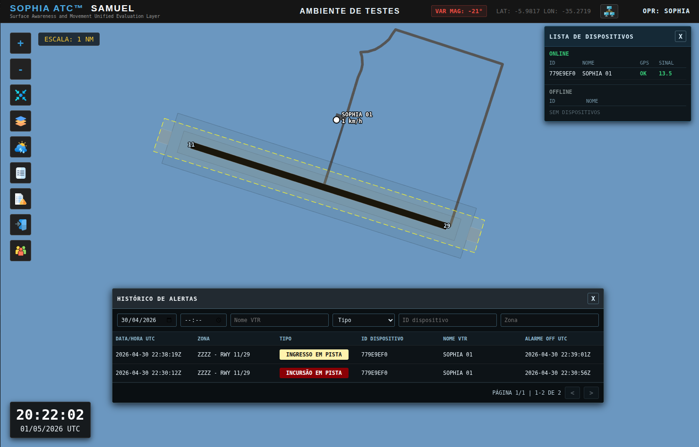
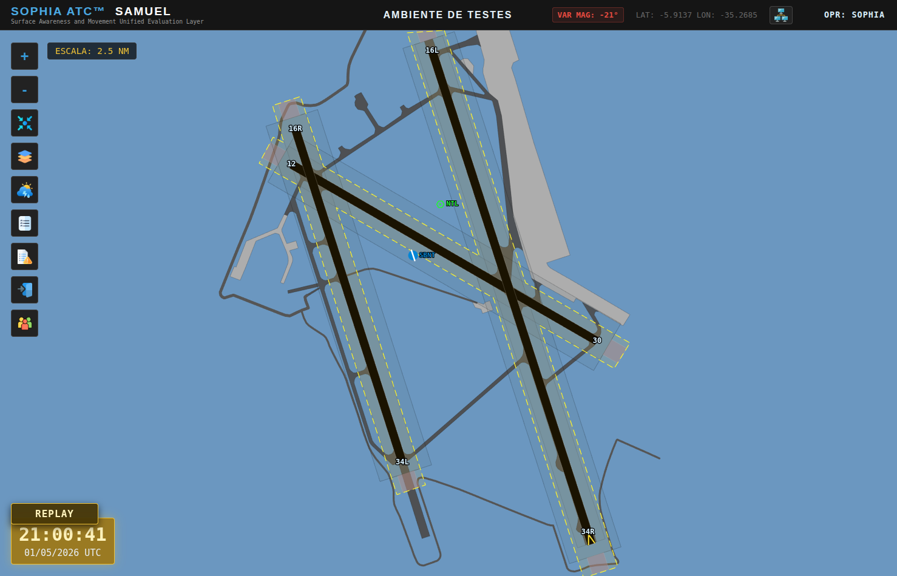
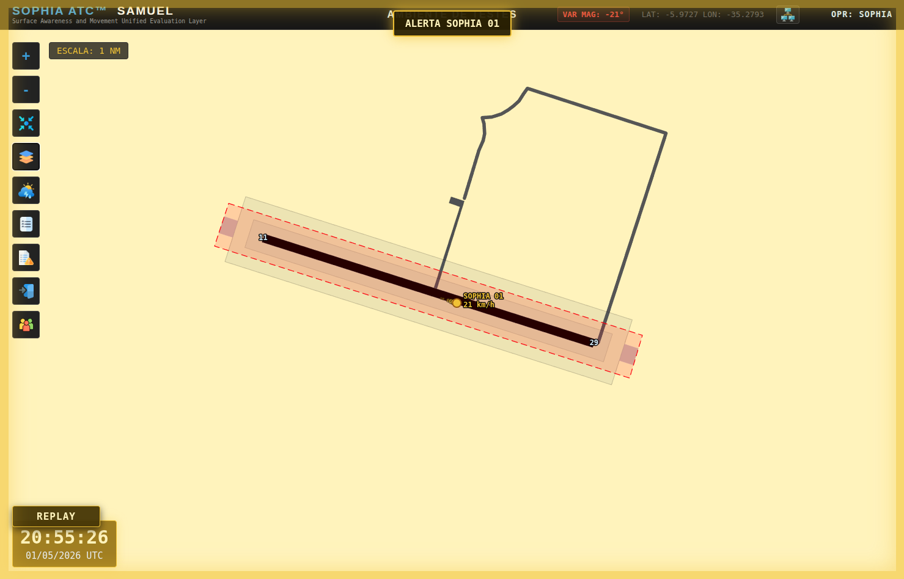
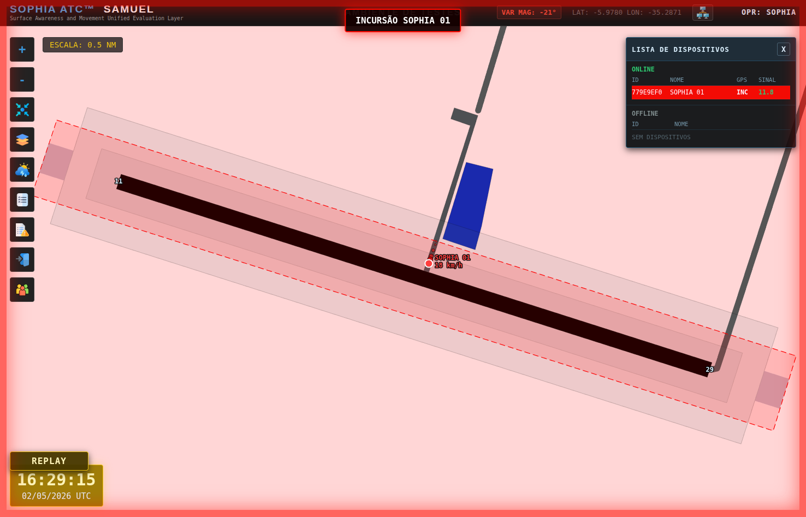
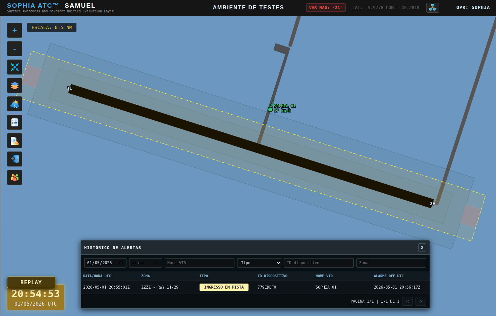
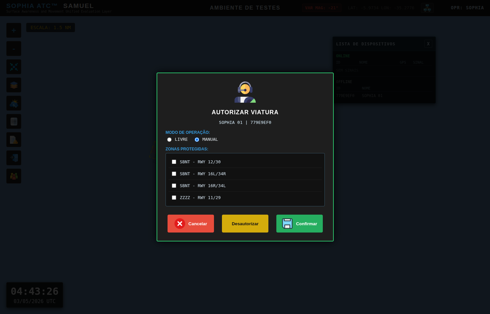
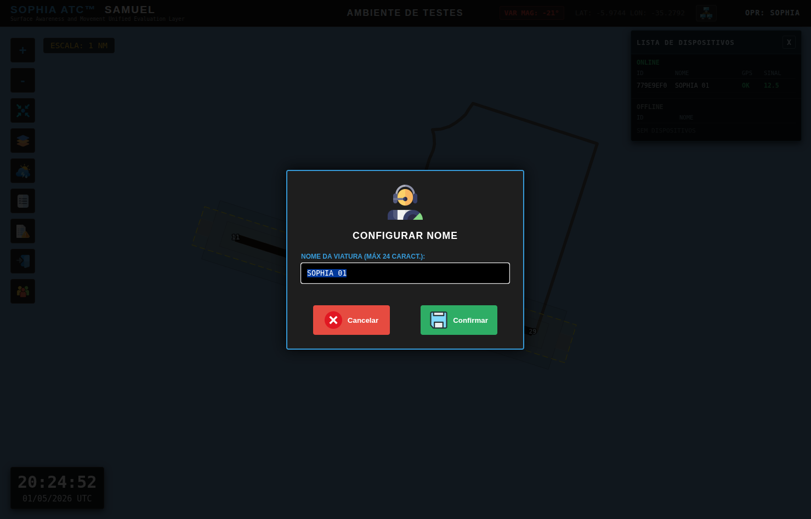

Geofencing Offline
Se houver perda de comunicação com a base, o rastreador mantém proteção local e confirma incursão por leituras consecutivas antes do disparo de alarme visual e sonoro.
Prevenção de Incursão em Pista
Sistema Avançado de Rastreamento de Superfície e Consciência Situacional Aeroportuária.
Surface Awareness and Movement Unified Evaluation Layer. Solução em tempo real para monitoramento de viaturas e aeronaves no solo, com foco operacional direto na mitigação de incursões em pista.

O SOPHIA SAMUEL combina rastreamento de superfície, motor gráfico leve e alertas operacionais para eliminar pontos cegos na área de movimento e aumentar a consciência situacional da Torre.
Se houver perda de comunicação com a base, o rastreador mantém proteção local e confirma incursão por leituras consecutivas antes do disparo de alarme visual e sonoro.
Telemetria compacta e comandos bidirecionais com baixa latência para identificação de viatura, acionamentos de alerta e chamadas operacionais.
Integração com imagens GOES-19 para leitura direta no videomapa radar, incluindo aviso de validade da camada meteorológica.
Renderização HTML5 Canvas leve, com ferramentas ATC nativas e operação fluida inclusive em ambientes legados.
Edição vetorial no navegador para pistas, taxiways e zonas de proteção, com persistência automática das propriedades do cenário.
Gravação contínua de eventos e reconstrução precisa de ocorrências para investigação operacional e treinamentos.
Interface operacional, gestão de autorização de zona e cenários de incursão em pista.






A plataforma foi arquitetada com lógica de navegação aérea: leitura rápida, alarmística consistente, rastreabilidade de eventos e suporte prático à decisão em ambiente crítico.